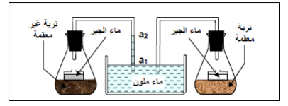

فرض مراقبة عدد 3 في علوم الحياة والأرض
المستوى : السنة السابعة أساسي
الأستاذ : توفيق الحجري
السنة الدراسية : 2020 / 2021
التوقيت : نصف ساعة
العلامة : 20 نقطة
تعليمات عامة
- أجب بدقة على الأسئلة المطروحة
- اعتن بجودة الخط وتنظيم الإجابة
- الرسوم والبيانات يجب أن تكون واضحة ومقروءة
- انتبه إلى توزيع النقاط بين مختلف الأسئلة
التمرين الأول (4.5 نقاط)
أصلح الخطأ بالجمل التالية إن وجد :
1. يمكن الترسيب من فصل مكوّنات التربة حسب شكلها. 1.5 نقطة
التصحيح:
2. يرفع الدبال من إستبقائية التربة. 1.5 نقطة
التصحيح:
3. الهواء الموجود بالتربة ناتج عن الحرث والعزق. 1.5 نقطة
التصحيح:
التمرين الثاني (8 نقاط)
1- أتأمّل التجربة التالية (4 نقاط)

الوثيقة : تجربة الكشف عن الكائنات الحية الدقيقة في التربة باستعمال ماء الجير
أ- حلّل هذه التجربة. 2 نقاط
ب- ماذا تستنتج ؟ 2 نقاط
2- أتمم الجدول الموالي بما يناسب (4 نقاط)
| مكوّن التربة | مصدره |
|---|---|
| الكلس | |
| المطر والسّقي | |
| الرّمل | |
| تحليل جثث الكائنات الحيّة |
التمرين الثالث (7.5 نقاط)
1. أخذنا عينة من التربة وسكبنا عليها 120 مل من الماء وبعد 3 دقائق لاحظنا أن كمية الماء التي عبرتها هي 90 مل. 3 نقاط
أحسب إستبقائية ونفاذية هذه التربة.
الاستبقائية =
النفاذية =
2. أضفنا لهذه التربة دبالا وسكبنا عليها 120 مل من الماء وبعد 3 دقائق عبرها 27 مل. 3 نقاط
أحسب الاستبقائية والنفاذية.
الاستبقائية =
النفاذية =
3. استنتج دور الدبال في التربة. 1.5 نقطة
الإصلاح النموذجي المفصل
التمرين الأول (4.5 نقاط)
1. تصحيح الجملة الأولى 1.5 نقطة
الجملة الأصلية: "يمكن الترسيب من فصل مكوّنات التربة حسب شكلها."
الجملة خاطئة. التصحيح:
يمكن الترسيب من فصل مكوّنات التربة حسب كتلتها.
الشرح: الترسيب هو تقنية فصل مكوّنات التربة اعتماداً على الكتلة (الوزن) وليس الشكل. فالجزيئات الأثقل (مثل الحصى والرمل) تترسب أولاً في قاع الأنبوب، تليها الجزيئات الأخف (مثل الطين والدبال). أما الشكل فلا يلعب دوراً أساسياً في عملية الترسيب. التنقيط: 1.5 نقطة كاملة لمن يحدد الخطأ ويصححه بـ "كتلتها".
2. تصحيح الجملة الثانية 1.5 نقطة
الجملة الأصلية: "يرفع الدبال من إستبقائية التربة."
الجملة صحيحة. لا يوجد خطأ.
الشرح: الدبال مادة عضوية إسفنجية تمتص الماء وتحتفظ به داخل التربة، مما يرفع من استبقائيتها (قدرتها على الاحتفاظ بالماء). فكلما زادت نسبة الدبال في التربة، زادت كمية الماء التي تحتفظ بها. التنقيط: 1.5 نقطة كاملة لمن يذكر أن الجملة صحيحة ويشرح لماذا (أو يكتفي بذكر "صحيحة" مع تبرير مقنع).
3. تصحيح الجملة الثالثة 1.5 نقطة
الجملة الأصلية: "الهواء الموجود بالتربة ناتج عن الحرث والعزق."
الجملة صحيحة. لا يوجد خطأ.
الشرح: عمليات الحرث والعزق تؤدي إلى تفكيك التربة وتقليبها، مما يسمح بدخول الهواء إلى مسامات التربة وتجديد الأكسجين الضروري لتنفس جذور النباتات والكائنات الحية الدقيقة. كما أن الحرث يكسر القشرة السطحية الصلبة ويفتح مجاري هوائية. التنقيط: 1.5 نقطة كاملة لمن يذكر أن الجملة صحيحة مع تبرير.
التمرين الثاني (8 نقاط)
1- تحليل التجربة والاستنتاج 4 نقاط
الوثيقة : تجربة الكشف عن الكائنات الحية الدقيقة في التربة
أ- تحليل التجربة (2 نقاط):
تتكوّن التجربة من أنبوبين: (أ1) يحتوي على تربة غير معقمة (طبيعية)، و(أ2) يحتوي على تربة معقمة (خالية من الكائنات الحية). يتصل كل أنبوب بوعاء يحتوي على ماء الجير (كاشف عن غاز ثنائي أكسيد الكربون CO₂) وبأنبوب يحتوي على ماء ملوّن.
الملاحظة:
- في الأنبوب (أ1) (تربة غير معقمة): نلاحظ صعود الماء الملوّن داخل الأنبوب وتعكّر ماء الجير.
- في الأنبوب (أ2) (تربة معقمة): لا يحدث صعود للماء الملوّن ولا تعكّر لماء الجير.
التفسير: في التربة غير المعقمة، توجد كائنات حية دقيقة (بكتيريا، فطريات...) تقوم بعملية التنفس الخلوي فتستهلك الأكسجين الموجود في الأنبوب مما يسبب انخفاضاً في الضغط يؤدي إلى صعود الماء الملوّن. كما تطرح هذه الكائنات غاز ثنائي أكسيد الكربون (CO₂) الذي يتفاعل مع ماء الجير فيسبب تعكّره. أما التربة المعقمة فلا تحتوي على كائنات حية، لذا لا يحدث تنفس ولا تغير.
ب- الاستنتاج (2 نقاط):
نستنتج أن التربة تحتوي على كائنات حية دقيقة (ميكروبات) تتنفس وتستهلك الأكسجين وتطرح ثنائي أكسيد الكربون.
التنقيط: نقطتان للتحليل (وصف التجربة + تفسير الملاحظات) + نقطتان للاستنتاج الصحيح.
2- إكمال الجدول 4 نقاط
الإجابة الصحيحة:
| مكوّن التربة | مصدره |
|---|---|
| الكلس | تفتت الصخور (الصخور الكلسية) |
| الماء | المطر والسّقي |
| الرّمل | تفتت الصخور (الصخور الرملية كالكوارتز) |
| الأملاح المعدنية | تحليل جثث الكائنات الحيّة (تفكيك المادة العضوية) |
الشرح: الكلس والرمل مصدرهما تفتت الصخور (التجوية الفيزيائية والكيميائية للصخور). الماء مصدره الأمطار والري. الأملاح المعدنية تنتج عن تحليل جثث الكائنات الحية بواسطة الكائنات المحللة (البكتيريا والفطريات) التي تحوّل المادة العضوية إلى أملاح معدنية قابلة للامتصاص من قبل النباتات. التنقيط: نقطة واحدة لكل خلية مملوءة بشكل صحيح.
التمرين الثالث (7.5 نقاط)
1. حساب الاستبقائية والنفاذية للتربة الأصلية 3 نقاط
المعطيات: كمية الماء المسكوبة = 120 مل، كمية الماء التي عبرت = 90 مل، المدة = 3 دقائق.
الاستبقائية = كمية الماء المسكوبة − كمية الماء التي عبرت
الاستبقائية = 120 مل − 90 مل = 30 مل
النفاذية = كمية الماء التي عبرت ÷ المدة الزمنية
النفاذية = 90 مل ÷ 3 دقائق = 30 مل/دقيقة
التنقيط: 1.5 نقطة لكل عملية حسابية صحيحة مع الوحدة المناسبة.
2. حساب الاستبقائية والنفاذية بعد إضافة الدبال 3 نقاط
المعطيات: كمية الماء المسكوبة = 120 مل، كمية الماء التي عبرت = 27 مل، المدة = 3 دقائق.
الاستبقائية = 120 مل − 27 مل = 93 مل
النفاذية = 27 مل ÷ 3 دقائق = 9 مل/دقيقة
التنقيط: 1.5 نقطة لكل عملية حسابية صحيحة مع الوحدة.
3. استنتاج دور الدبال في التربة 1.5 نقطة
الإجابة الصحيحة:
بمقارنة النتائج قبل وبعد إضافة الدبال، نلاحظ أن:
- الاستبقائية ارتفعت من 30 مل إلى 93 مل (تضاعفت 3 مرات تقريباً).
- النفاذية انخفضت من 30 مل/دقيقة إلى 9 مل/دقيقة (انخفضت إلى الثلث).
دور الدبال في التربة: يرفع الدبال من استبقائية التربة (يزيد قدرتها على الاحتفاظ بالماء) ويخفض من نفاذيتها (يبطئ تسرب الماء)، مما يجعل التربة أكثر خصوبة وصلاحية للزراعة. إضافة إلى ذلك، يثري الدبال التربة بالأملاح المعدنية الناتجة عن تحلله.
التنقيط: 1.5 نقطة كاملة لمن يستنتج أن الدبال يرفع الاستبقائية ويخفض النفاذية ويزيد من خصوبة التربة. تُقبل الإجابات التي تذكر دورين على الأقل من هذه الأدوار الثلاثة.
ملاحظة عامة: هذا التصحيح إرشادي، وقد تختلف إجابات التلاميذ مع الحفاظ على المعايير الأساسية. المهم هو الفهم العميق للسؤال، والتحليل المنطقي، واستخدام لغة علمية سليمة، وتقديم حجج متماسكة مدعومة بالمعطيات العلمية المناسبة. يجب مراعاة الدقة في المصطلحات العلمية (الاستبقائية، النفاذية، الترسيب، الدبال، إلخ) وجودة التعبير.